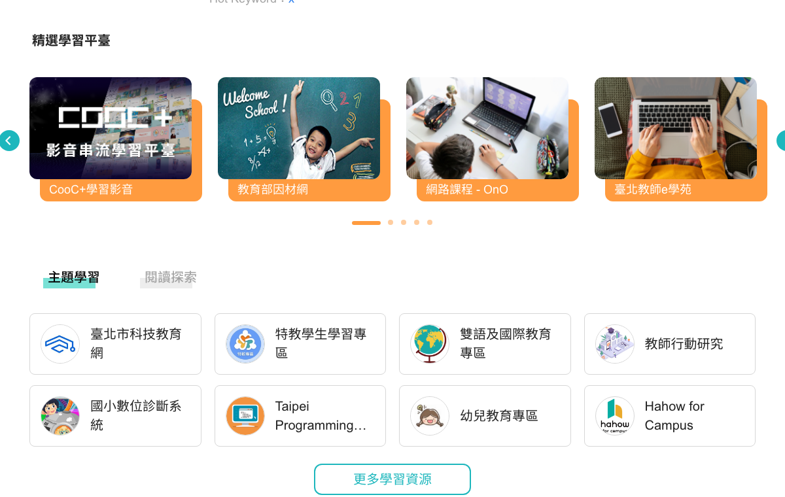
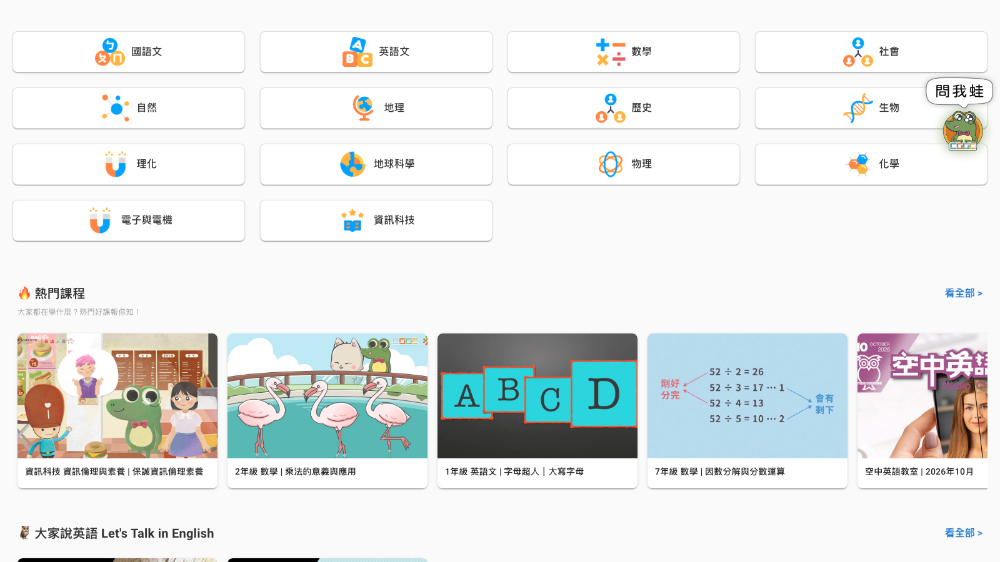

臺北酷課雲
從學習平臺到 AI 教育治理
六段看懂酷課雲
點卡片直接進入；任何一頁按 H 回到這裡
酷課雲：臺北每天都在用的學習平臺
各平臺累計瀏覽
酷課雲＋OnO＋YouTube＋CooC+＋酷AI，至 115/11/1
註冊帳號
酷課雲首頁公告數據（2026-11-21）
115 年瀏覽量
1/1～11/1，各平臺合計
105 年 8 月上線，今年是第 10 年
資料來源｜115 年第 33 次臺北市數位學習聯席會議紀錄 表1（統計至 115/11/1）；cooc.tp.edu.tw 首頁
一個入口，串起全部服務
酷課雲的版圖：四層結構
- 入口與身分臺北市單一身分驗證、親子綁定、酷課 App
- 六大服務CooC+、酷AI、OnO、深耕閱讀酷、主題資源、入口整合
- 資料層中介資料庫（學籍）、學習紀錄、平臺統計
- 治理層數位學習中心統籌、聯席會議每週管考、資安變更管制
使用者只要記一個帳號；平臺之間共用身分與學籍資料
入口長這樣：學習資源一站找

精選學習平臺：CooC+、因材網、OnO、臺北教師e學苑
主題學習：科技教育、特教、雙語國際、幼教、本土語、程式課程
外部合作：Hahow for Campus 等課程平臺
家長用親子綁定連到孩子的帳號
資料來源｜cooc.tp.edu.tw（2026-11-21 截圖）
教育部 A2 推薦名單上，有臺北酷課雲

教育部《115 年中小學教師數位與 AI 教學指引》：優先選用教育部建置或推薦的平臺
A2 數位學習平臺推薦名單：臺北酷課雲（115.10.16～118.12.31）
與因材網、Cool English 酷英並列
地方自建平臺進入中央推薦名單
資料來源｜pads.moe.edu.tw/teacher_list.php（2026-11-21 截圖）
學、看、讀、上課、AI、資源

六大服務一覽
① 入口與身分
單一身分驗證登入、親子綁定、酷課 App
② CooC+ 影音串流
像追劇一樣學；AI 學習助理「問我蛙」
③ 酷AI 學習系統
個人化推薦、AI 助教、學習診斷、口說與臺語
④ 酷課OnO 線上教室
直播、跨校選修、大學體驗課程、教師e學苑
⑤ 深耕閱讀酷
115 年新建的閱讀平臺，接替酷課閱讀
⑥ 主題與合作資源
科技、特教、雙語、本土語、幼教專區；Hahow；YouTube
資料來源｜115 年第 33 次臺北市數位學習聯席會議紀錄 表1（統計至 115/11/1）；cooc.tp.edu.tw；深耕閱讀酷後台（2026-11-10）
看得到的服務：影音與線上教室
資料來源｜coocplus.tp.edu.tw、ono.tp.edu.tw（2026-11-21 截圖）
酷AI：從統一進度，走向個人化學習

智慧推薦影片：找出弱點，推薦最適合的影片
個人化練習：AI 自動出題，針對弱點反覆練習
互動式影片：影片中嵌入問題，被動看變主動學
另有學習診斷、英語口說、臺語、Scratch 即時批改
資料來源｜2026 酷AI 系統新增功能介紹（臺北市政府教育局）
對學生、老師、家長、學校各有什麼好處

四種角色，各自得到什麼
| 角色 | 得到什麼 | 對應服務 |
|---|---|---|
| 學生 | 隨時能學：影片、練習、AI 即時解答；弱點有人（AI）幫忙補 | CooC+、酷AI、OnO |
| 教師 | 備課素材現成；AI 出題與學習診斷，少花時間批改、多花時間教學 | 酷AI 教師端、CooC+、教師e學苑 |
| 家長 | 親子綁定看得到孩子的學習；假期有自主學習活動可參加 | 親子綁定、OnO 活動、Hahow |
| 學校 | 不用各自採購平臺；帳號與學籍由市府統一處理 | 單一身分驗證、中介資料庫 |
有沒有用？研究看得到效果
113 年單組前後測
國北教大，六年級，p<.001
114 年準實驗研究
5 校 12 班 243 人，數學成效顯著
酷AI 累計學習人次
2026-01 跨縣市記者會公布
114 年研究：數學顯著；學習動機等情意面向未達顯著
為什麼要整合在一朵雲上

分散 vs. 整合
一個帳號
學生老師不必記多組帳密；新平臺上線直接用單一身分驗證
一份學籍
班級、年級由中介資料庫統一提供，平臺不必各自建檔
一套資安管理
系統變更走正式申請；弱點通報時全平臺一起盤點修補
一個統籌單位
數位學習中心統籌各平臺廠商，每週聯席會議管考
今年跟去年比：多數平臺成長
| 平臺 | 115 年（1/1～11/1） | 114 年同期 | 增減 |
|---|---|---|---|
| 酷課雲入口（總訪問量） | 25,663,760 | 22,766,815 | ＋12.7% |
| CooC+（總訪問量） | 1,063,186 | 932,421 | ＋14.0% |
| 酷AI（瀏覽人次） | 363,925 | 343,912 | ＋5.8% |
| YouTube（觀看次數） | 5,432,214 | 4,968,837 | ＋9.3% |
| 酷課OnO（總訪問量） | 5,742,854 | 10,400,201 | −44.8% |
| 合計 | 38,265,939 | 39,412,186 | −2.9% |
OnO 減少主因：114 年 3 月單月 359.9 萬次，墊高去年基期
資料來源｜115 年第 33 次臺北市數位學習聯席會議紀錄 表1（統計至 115/11/1）
從學習紀錄，到個人化與決策
資料怎麼變成 AI 的價值
蒐集
學生在 CooC+、酷AI 的觀看、作答紀錄
診斷
酷AI 分析知識點弱點，產出學習診斷報表
推薦
推薦影片與個人化練習題，教師收到推薦評量
決策
彙整成跨平臺指標，支援學校與局端決策
AI 延伸的三個方向
已上線｜AI 學習
酷AI 個人化推薦、AI 助教、口說與臺語；CooC+ 問我蛙
建置中｜AI 嵌入各平臺
深耕閱讀酷串接酷AI 學習紀錄；各平臺共用 AI 助理
規劃中｜AI 治理
跨科室 19 項教育治理指標、16 支儀表板雛型
從局處長官的角度看
長官關心的五件事
| 關心什麼 | 現況 | 依據 |
|---|---|---|
| 有沒有效？ | 多數平臺用量成長；酷AI 數學成效研究達顯著 | 聯席會議表1、114 成效研究 |
| 公平嗎？ | 免費、全市共用；已開放三個離島與偏鄉縣市共享 | 2026-01 跨縣市 MOU |
| 安全嗎？ | 變更須正式申請；弱點通報全平臺盤點修補；老舊系統主動汰換 | 聯席會議決議、系統清單 |
| 能永續嗎？ | 全市一套平臺，學校不必各自採購；中央列入推薦名單 | 教育部 A2 推薦名單 |
| 下一步？ | 把分散的平臺數據整合成治理儀表板，AI 從學習走到決策 | 見下一頁 |
建議的三個下一步
- 1唯一入口：新建的學習系統一律接單一身分驗證、掛上酷課雲入口
- 2一張儀表板：各平臺用量與學習成效整合成跨平臺指標，按月提供長官
- 3AI 從學習走到治理：以酷AI 經驗為基礎，擴大到閱讀、評量與決策支援
以上為數位學習中心的建議，供長官裁示
謝謝聆聽！
資料來源
- 115 年第 33 次臺北市數位學習聯席會議紀錄（表1 平臺量化成效，統計至 115/11/1）
- 臺北酷課雲首頁「酷課雲使用數據」（cooc.tp.edu.tw，2026-11-21）
- 教育部 A2 數位學習平臺推薦名單（pads.moe.edu.tw，2026-11-21）
- 2026 酷AI 系統新增功能介紹（臺北市政府教育局）
- 114 陳建志酷AI成效評估研究案結案報告（2026-03-03）
- 2026-01-26 酷AI 教學手冊發布暨跨縣市合作簽署記者會
- 115 智慧閱讀平臺建置案（深耕閱讀酷）
- 115 年教育大數據平台與 AI 教育治理（數位發展部輔導案）